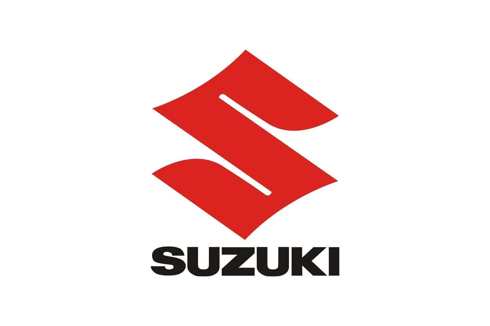

Hi, My name is Tanay
and I am a passionate

Work Experience

SQL Developer Intern (2023-2024)
During my one-month internship as an SQL Developer at Maruti Suzuki, I focused on database management and optimization. My primary tasks involved:
- Writing and optimizing SQL queries for various business intelligence reports
- Assisting in the maintenance and troubleshooting of existing database systems
- Collaborating with cross-functional teams to understand and implement data requirements
- Learning about data security measures and best practices in the automotive industry
- Gaining hands-on experience with large-scale database systems used in automotive manufacturing
- Participating in daily stand-ups and contributing to team projects